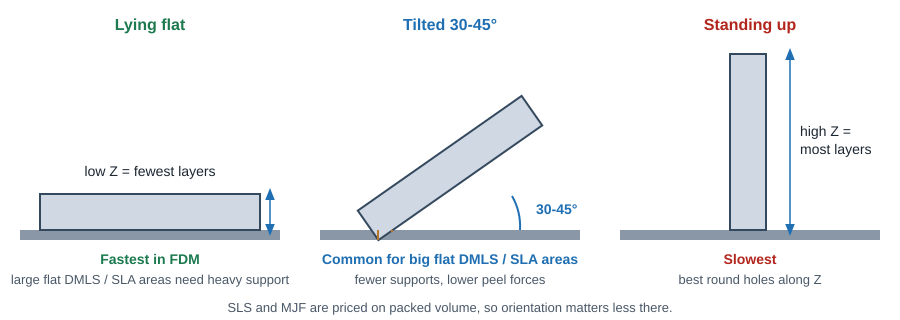
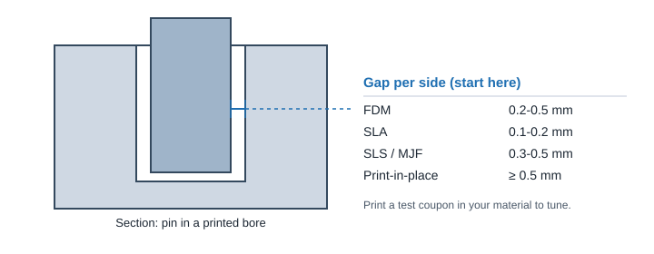

3D Printing
Quality, Time & Cost Tips
Most print cost comes from material volume, build height (layer count) and post-processing. Most quality problems come from orientation, thin or uneven walls, and fits designed without clearance.
What drives print time and cost

| Process | Main cost drivers | Biggest savings |
|---|---|---|
| FDM | Print time (Z height, infill, supports), material | Lower infill, fewer supports, lay part flat, coarser layers for non-cosmetic parts |
| SLA | Z height, resin volume, support removal and finishing | Hollow with drain holes, orient for low Z, avoid supports on cosmetic faces |
| SLS / MJF | Part volume and bounding box (nesting density), dyeing / finishing | Hollow thick sections, shrink bounding box, nest multiple parts, standard color |
| DMLS | Z height, support volume, stress relief, support removal, machining | Self-supporting angles, small footprint, minimal machined faces |
Wall thickness and minimum features
| Process | Min wall | Recommended wall | Min positive feature (pin, rib) | Embossed / engraved text |
|---|---|---|---|---|
| FDM | 0.8 mm (0.03 in) | 1.2-2 mm (0.05-0.08 in), multiple of nozzle width | ~2 mm (0.08 in) | 0.6 mm deep / high, 10 pt+ bold |
| SLA | 0.4 mm supported, 0.6 mm unsupported | 1-2 mm (0.04-0.08 in) | ~0.3 mm (0.012 in) | 0.3 mm deep / high, 8 pt+ |
| SLS | 0.8 mm PA12, 2 mm filled grades | 1.5-3 mm (0.06-0.12 in) | ~0.8 mm (0.030 in) | 0.5 mm deep / high, 10 pt+ |
| MJF | 0.8 mm | 2.5-4 mm (0.10-0.16 in) | ~0.5 mm (0.020 in) | 0.5 mm deep / high, 10 pt+ |
| DMLS | 0.5 mm (0.020 in) | 1-3 mm (0.04-0.12 in) | ~0.4 mm (0.016 in) | 0.3 mm deep / high |
Tall thin features need more thickness than the minimum. Treat these as floors, not targets.
Design tips for better quality

Do
- Keep walls uniform; blend thickness changes gradually.
- Add fillets at the base of ribs and bosses (they reduce stress and warp).
- Break up large flat thick slabs with ribs or hollowing to prevent warp.
- Put critical dimensions in XY, where tolerance is tighter than Z.
- Use 45° chamfers on down-facing edges (see Overhangs).
- Call out cosmetic faces and critical holes on the order.
Don't
- Design sharp internal corners on loaded features.
- Use very thick solid sections (sink, warp, heat, cost).
- Depend on layer bonding for the main load in FDM.
- Expect molded-like accuracy on long parts: tolerance adds about 0.1% of length.
- Use the minimum wall everywhere "to save weight".
Fits, clearances and assemblies

| Process | Sliding / easy fit, per side | Same fit, on diameter | Light press fit | Print-in-place moving parts (gap per side) |
|---|---|---|---|---|
| FDM | 0.2-0.5 mm (0.008-0.020 in) | 0.4-1.0 mm (0.016-0.040 in) | 0-0.1 mm, then test | 0.5 mm+ (0.020 in) |
| SLA | 0.1-0.2 mm (0.004-0.008 in) | 0.2-0.4 mm (0.008-0.016 in) | Not recommended (brittle) | 0.5 mm+ |
| SLS / MJF | 0.3-0.5 mm (0.012-0.020 in) | 0.6-1.0 mm (0.024-0.040 in) | 0-0.1 mm (nylon is forgiving) | 0.5-0.8 mm, plus powder removal path |
| DMLS | Machine the mating faces | Machine to size | Machine to size | Rarely practical |
For new materials or machines, print a small coupon with holes and pins at several clearances before committing the real part.
Holes and threads in printed parts
- Holes print undersize in FDM and SLA (and slightly out of round when horizontal). Model critical holes about 0.1-0.2 mm under and drill or ream to size; the drill finder gives the nearest standard drill. Horizontal holes print best with a teardrop top.
- Heat-set inserts (FDM, SLS, MJF) give durable metal threads. Model the insert maker's recommended pilot hole and boss size. See insert types.
- Below 1/4-20 / M6, do not print threads. Tap them into a modeled tap-drill hole (tap drill charts) or use heat-set inserts.
- Model printed threads only for coarse threads at 1/4-20 / M6 and larger, and add clearance to the thread profile.
- Self-tapping screws into nylon bosses work well; size the boss OD at about 2-2.5x the screw diameter.
- Metal (DMLS): model the tap drill hole and tap after printing, or machine threads in post-processing.
Spend less: process and design choices
Cheapest process that works
FDM for fixtures and form checks, SLS / MJF for functional nylon, SLA for looks and detail, DMLS only when metal and complexity both demand it.
Consolidate parts
Combining an assembly into one printed part removes fasteners, tolerance stacks and assembly labor.
Reduce support volume
Self-supporting angles, chamfers and good orientation cut material, time and finishing.
Hollow and lighten
Hollow thick sections (with escape holes) or use infill and lattices where strength allows.
Batch and nest
Order several parts or variants together; powder-bed builds share the same machine run.
Standard finish and color
As-built or standard dye is cheapest. Custom color, painting and smoothing add days and cost.
Layer height trade-off
| Choice | Result | Use for |
|---|---|---|
| Thinner layers | Smoother curves and slopes, finer detail, longer print, higher cost | Cosmetic parts, small detailed parts, shallow slopes |
| Thicker layers | Visible stair-stepping on slopes, faster and cheaper | Fixtures, internal parts, mostly vertical walls |
File preparation checklist
- Upload STEP when the vendor accepts it (lets them measure true geometry); otherwise STL or 3MF.
- Export meshes fine enough that round holes stay round (chord tolerance about 0.01 mm / angle 5° or finer), but not so fine the file is huge.
- Check units (mm vs inch) before upload. A part 25.4x too small or large is a common mistake.
- Make the mesh watertight with no self-intersections; one body per part.
- Remove modeled threads you do not want printed; leave tap-drill or insert pilot holes instead.
- Note critical dimensions, cosmetic faces and inserts on a drawing or in the order notes.
Related: process comparison · materials · internal passages · overhangs and supports · hole and thread rules
ProtoLabs: Understanding 3D Printing Tolerances, 7 Mistakes to Avoid When Designing 3D Printed Parts, Designing a Part for Multi Jet Fusion, Design for 3D Printing Toolkit. Protolabs Network: Designing for SLS. FDM clearances, text sizes and layer guidance are general practice and vary by printer.